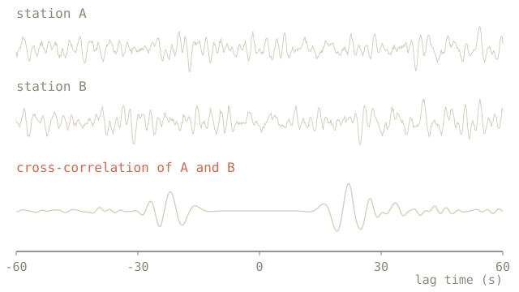
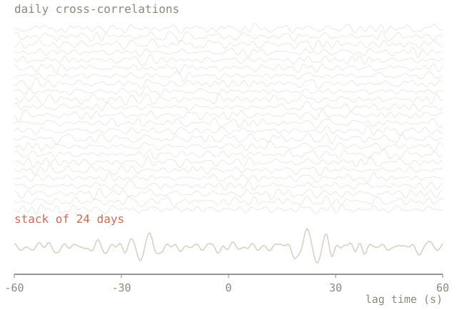
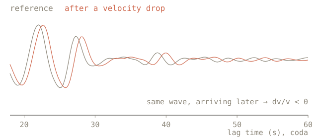

the idea
Most seismology uses the signals from earthquakes. I use the background noise that usually gets thrown away: the weak, constant vibration from ocean waves, wind and traffic that every seismometer records.
The noise at two nearby stations is partly the same noise, arriving at slightly different times. Cross-correlating the two records picks out that shared part. The result looks like a wave that travelled from one station to the other, as if one of them were the source.

stacking
One day of noise gives a messy cross-correlation. Averaging many days cancels the random part and keeps the wave. The line on the home page shows the same thing as an animation: a year of days, stacked one after another.

dv/v
The later part of the wave, the coda, has bounced around the ground between the stations many times. If the seismic velocity drops slightly, the coda arrives slightly later. Comparing each day's coda with a reference measures that change, called dv/v.
These changes follow groundwater, temperature and stress, and velocity drops have been seen days before volcanic eruptions.
For seismologists: ambient noise cross-correlation and dv/v monitoring from coda waves, in Python with ObsPy.

thesis
My master's thesis reproduces the dv/v results of Author et al. (20XX). Starting from continuous data recorded at Your stations and time period, I computed daily cross-correlations, stacked them, and measured velocity changes from the coda.
Reproducing a published result meant rebuilding every step of the processing myself, which is where I learned most of what I know about noise seismology.
images/your-result.png
interests
What I'd like to understand better next:
- telling real velocity changes apart from seasonal effects like rain and temperature
- other ways of measuring dv/v, beyond the one in my thesis
- writing research code that other people can run again
tools
Python, ObsPy, NumPy, Matplotlib